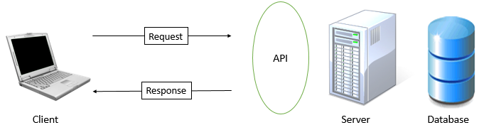

Before diving into the DailyMed API, we start with a brief discussion of web API's. The acronym API is commonly used, but is not very descriptive, so what is it?
An API, or application program interface defines how programs/applications communicate and interact with one another. By exposing some of its features and functions to the public, these applications allow other applications to access its data. Applications can access this data without knowledge of all of the application's inner workings. In our case, we are concerned with the definition of a server-side web API, which is also an API, but built for the internet. A web API is a request-response system. Very simply, we are making an HTTP request (call) to a server (in our case, the DailyMed server), and the server sends us back a response in the form of JSON or XML.
Dailymed's API is a RESTful web service. REST, which stands for "Representational State Transfer," consists of architectural design principles for building scalable web services which emphasize the properties of performance, scalability, reliability, portability, maintainability to name a few. REST is protocol-independent, but RESTful systems (systems built on the constraints of REST) use HTTP as its underlying protocol to communicate between the client and the server. Thus, there are several methods used to interact with representations of resources. These include the following:
A RESTful web service consists of the following basic components:
Now that you understand what a web API is, let's talk about DailyMed. DailyMed provides access to package inserts (also known as drug labels) for FDA-approved medications, and is maintained by the U.S. National Library of Medicine (NLM). Contents of DailyMed are updated on a daily basis (hence the name).
| Component | DailyMed Specifics | Notes |
|---|---|---|
| Base URI | Version 1: http://dailymed.nlm.nih.gov/dailymed/services/ Version 2: http://dailymed.nlm.nih.gov/dailymed/services/v2/ |
DailyMed lists two URI versions in their documentation, but it appears that all of the resources are on version 2. Therefore, select version 2. |
| Resource representation | JSON/XML | The DailyMed web service can return JSON or XML. Some resources only return XML. |
| HTTP method | GET | Because the intent of this API is to retrieve/return data without modification, GET is the only method supported. |
Now that you understand the basics of REST and API's, we are ready to make our first call.